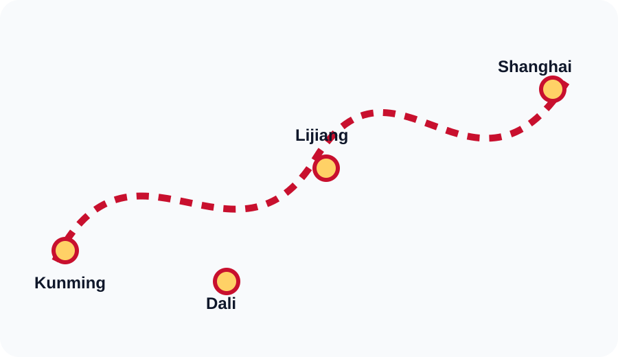

Kunming
Capital de Yunnan y ciudad de la eterna primavera.
Ver destinoCompra vuelos, revisa destinos y gana Lucky Points con una experiencia web clara, rapida y adaptable a movil, tablet y escritorio.
Formulario maquetado con CSS Grid para mejorar orden, lectura y adaptabilidad.
Cards organizadas con CSS Grid y estilos reutilizables.
Capital de Yunnan y ciudad de la eterna primavera.
Ver destinoCiudad historica junto al lago Erhai y arquitectura Bai.
Ver destinoSelva tropical, templos y cultura Dai.
Ver destinoCasco antiguo con canales y arquitectura Naxi.
Ver destinoLa interfaz v2.0 prioriza una navegacion clara y una presentacion visual consistente para reforzar la conversion online del caso internacional.
